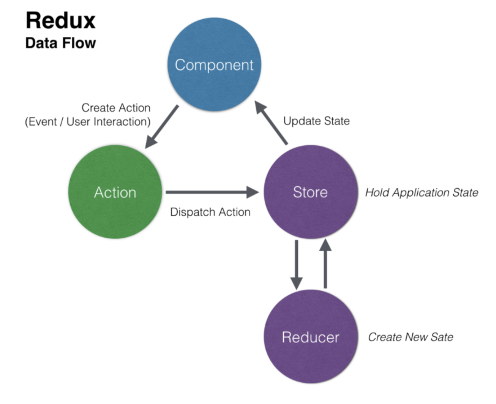

NGRX - Redux state managment + RxJS
- Redux
- RxJS
- NGRX
Redux
What is Redux state managment ? What it is all about ?
By using Redux state managment we have central data store in our application. The store contains the state of application and is single source of truth for our components. By using that, we don't need to synchronize state between components manually. Instead we can fully rely on Redux store, our single source of truth at any time.
Core principles of Redux:
- Store
- Actions
- Reducers
Actions
Actions are used to send information from app to the store. We are using them to change some part of application state.
Actions are just JavaScript object like that:
{
type: LOGIN_USER,
payload: {username: ‘sebastian’, password: ‘123456’}
}
Long story short, we say that we want to LOGIN_USER and that we want to pass also some payload information. Actions can be also without payload information
To run the action we are dispatching the action.
dispatch({type: LOGIN_USER});
...then it goes to...
Reducers
Reducers are the most important blocks of whole idea of Redux.
Reducers are pure functions that take current state application and action type, then returns the new state of the application.
They will never mutate the state, but the new state will be created.
It is important to remember that Pure functions never do any side effects.
Store
The store is just JavaScript object, central object that hold whole state of application.
flow of redux application
RxJS
What is RxJS ?
RxJS is implementation of Reactive Extensions in JavaScript.
Reactive Extensions
Reactive Extensions
Reactive extensions is a library for composing asynchronous and event-based programs by using observables sequences.
Very short description will be that Reactive Extensions are:
- Observables
- Operators
- Observer + Iterator pattern
Observables...
... are sequences of items. We can think of Observable as an array of things in time.
We can create observables:
- from promise
- from events
- from Reactive Forms
- from array
- and more
Operators...
... are special functions which are doing something with our sequence. We can filter, map, and for example merge two observables together.
Sample operators:
- map
- filter
- mergeMap, switchMap(flatMap)
- takeLatest, takeUntil
- catch, retry, debounce
Some examples
fetching data from REST endpoint
rxjs ver. 5.*
public getData(): Observable {
return this.http.get('apiUrl/something')
.map(res => res.json())
.filter(res => res.score > 5)
.catch(error => Observable.throw("An error has occured"));
}
rxjs ver. 6.*
public getData(): Observable {
return this.http.get('apiUrl/something')
.pipe(
map(res => res.json()),
filter(res => res.score > 5),
catch(error => Observable.throw("An error has occured")),
);
}
Reactive Forms RxJS
Reactive Forms, observablesProgress bar with RxJS
Progress barNGRX
- Actions Creators
- Reducers
- @ngrx/Store
- @ngrx/Effects
NGRX flow

Actions
First, we want to define our actions as const variables like that:
export const ADD_TODO = '[Todos] Add Todo';
export const REMOVE_TODO = '[Todos] Remove Todo';
export const EDIT_TODO = '[Todos] Edit Todo';
export const ARCHIVE_TODO = '[Todos] Archive Todo';
export const UNARCHIVE_TODO = '[Todos] Unarchive Todo';
We could just use strings in our application when we dispatch action, but with that approach we have 2 benefit:
- We have intelisense for our actions and we can use it like actions.ADD_TODO
- It is a common practice in NGRX to prefix action with kind of namespace like [Todos] for debugging purposes. (time travel debugging in devtools)
Action creators
In NGRX we are creating something called Action Creators which are Classes which implements Action interface from @ngrx/Store
export class AddTodoAction implements Action {
readonly type = ADD_TODO;
constructor(public payload: Todo) { }
}
Then in file with actions we are exporting it like that (in this example we have some more actions like that).
// This union makes it easier for reducers to use only certain action types
export type Actions
= AddTodoAction
| RemoveTodoAction
| EditTodoAction
| ArchiveTodoAction
| UnarchiveTodoAction;
To dispatch (run) our action in component we write something like that:
delete(id: number) {
this.store.dispatch(new todo.RemoveTodoAction(id));
}
<button (click)="delete(1)">delete</button>
Reducers
Reducers in NGRX looks like that, just a function which wait for certain action and returns new state.
export function reducer(state: State = initialState, action: Action): State {
switch(action.type) {
case todo.ADD_TODO:
let id = Math.max(...state.ids) + 1;
return {
ids: [...state.ids, id],
entities: {
...state.entities,
[id]: action.payload
}
};
case todo.REMOVE_TODO:
return {
ids: state.ids.filter(id => id !== action.payload),
// Lodash omit function
entities: omit(state.entities, action.payload)
}
default:
return state;
}
}
Selecting from state
We have store, we have actions and we have reducers which are changing our state through special action. Now, we want take some chunk of state and display it in components.
store.select
this.todos$ = this.store.select<fromTodos.State>('todos')
.map( todos => {
return {
ids: todos.ids.filter(id => !todos.entities[id].archived),
entities: todos.entities
}
}
In NGRX, store is always represented as Observable, and here comes RxJs. We can use whatever operator we want.
@ngrx/effects
side effects for ngrx
- We can listen for @ngrx/store actions
- isolate side effects from components
- communicate outside of angular - http request for example
NGRX + effects flow

Redux DevTools and Time Travel
Resources and links
- Redux official
- Reactive Extensions
- RxMarbles - interactive marbles explain operators
- Learn rxjs - documentation of operators and same recipies
- RXJS with examples
- Todd motto - rxjs observables, observer pattern
- ngrx
- Simple and fast introduction to NGRX
- ngrx github
- Todd Motto ngrx tutorials
- Understanding NGRX by building a Store - Keynote at ngPoland
- Play by Play Angular ngrx, pluralsight
- Presentation made with Reveal.js
Here is boilerplate for you, to start playing with NGRX:
Getting started with NGRXand repo for this reveal js presentation:
slides for workshopIn both cases, it will stay on my github for a long time. It will be updated and enchance also soon.
Thx for attention
bonus: how to start with NGRX
create angular project with ng cli
npm install --save @ngrx/store @ngrx/store-devtools @ngrx/router-store @ngrx/effects
create action file and define const actions
todos.actions.ts
import { Action } from '@ngrx/store';
export const ADD_TODO = '[Todos] Add Todo';
export const SOME_OTHER_ACTION = 'SOME_OTHER_ACTION';
export class AddTodoAction implements Action {
readonly type = ADD_TODO;
constructor(public payload: any) {}
}
export class SomeOtherAction implements Action {
readonly type = SOME_OTHER_ACTION;
constructor(public payload: any) {}
}
export type Actions = AddTodoAction | SomeOtherAction;
create reducer file and define your reducers and default state of that chunk of state (in that example, todos array)
todos.reducer.ts
import { Action } from '@ngrx/store';
import * as fromTodoActions from '../actions/todo.actions';
export interface Todos {
id: number;
task: string;
year: number;
month: number;
day: number;
hour: number;
min: number;
archived: boolean;
}
export interface TodosState {
todos: Todos[];
}
export const initialState: TodosState = {
todos: [
{
id: 1,
task: 'Test 1',
year: 2017,
month: 5,
day: 6,
hour: 19,
min: 17,
archived: false,
},
{
id: 2,
task: 'Test 1',
year: 2018,
month: 7,
day: 2,
hour: 23,
min: 21,
archived: false,
}
]
};
export function reducer(state: TodosState = initialState, action: Action): TodosState {
switch (action.type) {
case fromTodoActions.ADD_TODO:
return {
...state,
};
default:
return state;
}
}
in app.module.ts attach store to project, and pass object with all reducers
app.module.ts
StoreModule.forRoot({todos: reducer}),
in component file inject store from @ngrx/store and dispatch action
app.component.ts
import { Component } from '@angular/core';
import { Store } from '@ngrx/store';
import * as fromRootReducer from './reducers/app.reducer';
import * as fromTodoActions from './actions/todo.actions';
@Component({
selector: 'app-root',
templateUrl: './app.component.html',
styleUrls: ['./app.component.css']
})
export class AppComponent {
constructor( private store: Store ) {}
public addTodoAction() {
console.log('addTodoAction function from component');
this.store.dispatch(new fromTodoActions.AddTodoAction('whatever'));
}
}